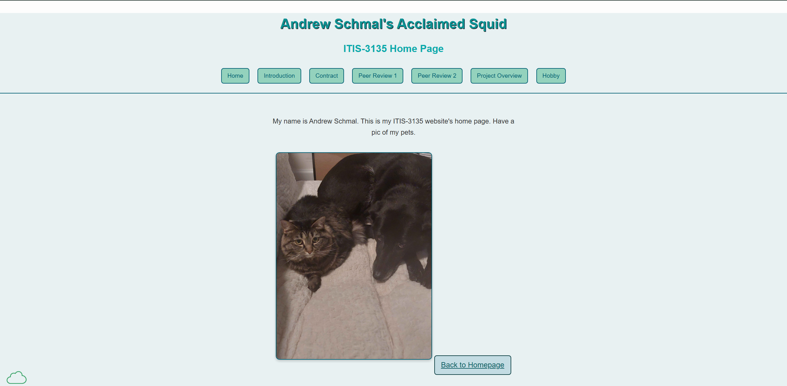

Review 1
View Andrew Schmal's website here
Evaluation
- Page leads to the correct location.
- No spaces or uppercase letters in file names.
- Uses CRAP principles effectively (Contrast, Repetition, Alignment, Proximity).
- Alignment could use slight adjustments in tagline spacing.
- Replace the bright white form background with a softer color.
- Has header, main, footer, and optional nav as required.
- Header includes the site's branding and uses proper hierarchy.
- Tagline is visible and consistent on every page.
- Footer includes validation links and user page menu.
- Specific project requirements are addressed.
- Consider adding more content to the homepage to match the style of other pages.
Additional Feedback
Strength: Very colorful design, stands out compared to most other websites. Navigation works and makes the website feel interactive.
Improvement: Improve contrast between navigation text and background for better readability.
Suggestion: Ensure the bright pink is readable and accessible for all users. Add hover effects on navigation links and test responsiveness for mobile devices.